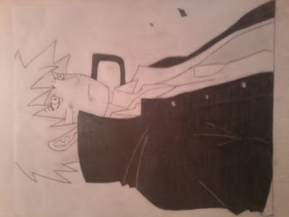
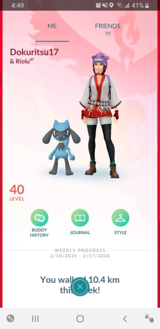

Besides watching anime and reading manga, I love reading long fiction novels. Here are some of the series I've finished of:
I used to love drawing and writing stories. So one day I decided to adventure into drawing anime. I could sketch basic stuff, but never had the courage to color them. Here are a few images. Ignore the rotated Naruto.
I've always enjoyed playing videos games ever since I was required to use a computer for school work. The games I play vary from competitive shooting games like Rainbow Six Siege to adventure type games like Subnautica. Here are a few others:
I have to admit, I was never a fan of pokemon. I was a digimon fan all the way, but catching and collecting pokemon has become really fun. I started two days after the game came out because a friend of mine was playing and so to spend more time with them, I decided to start it up. Now I'm really dedicated to catching them all. Add me for gifts, raiding, and trading:
